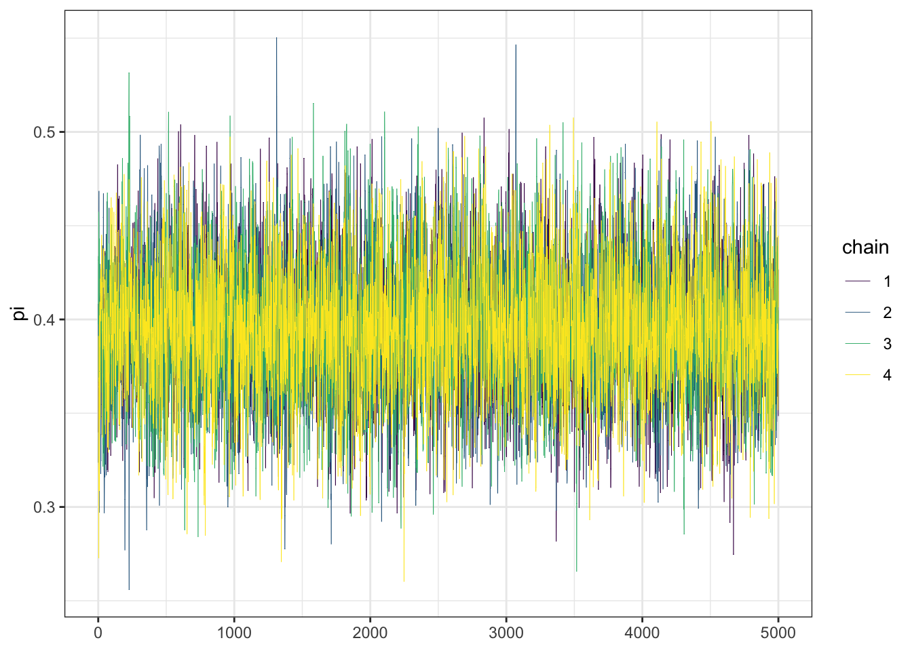
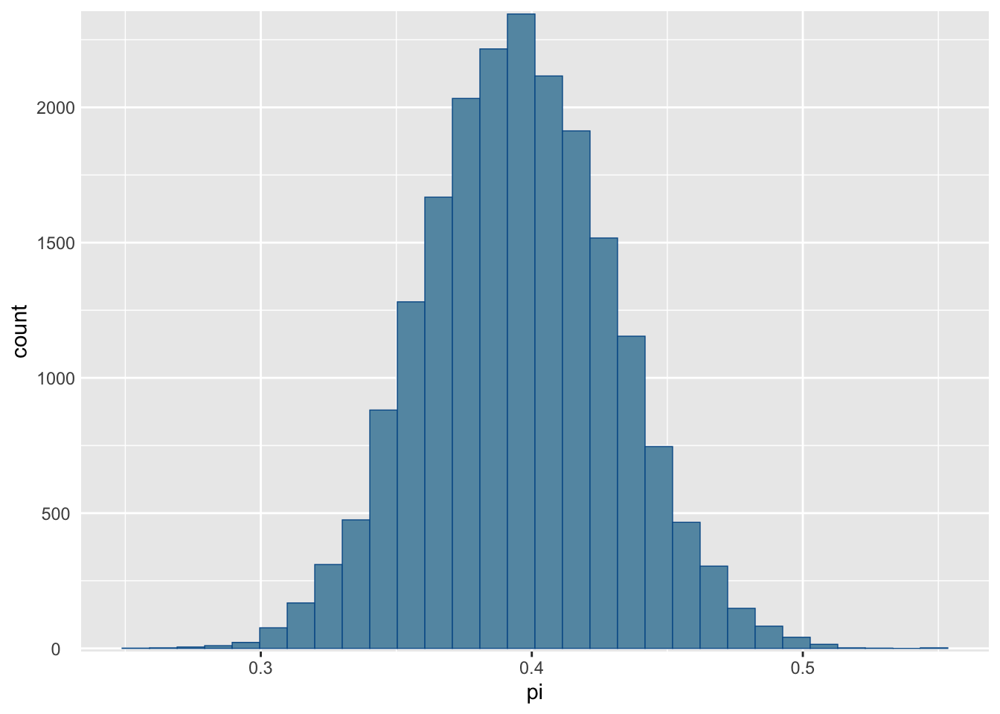
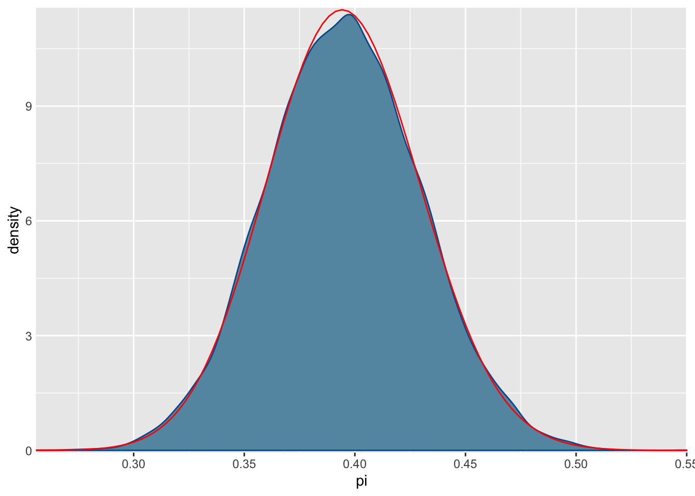
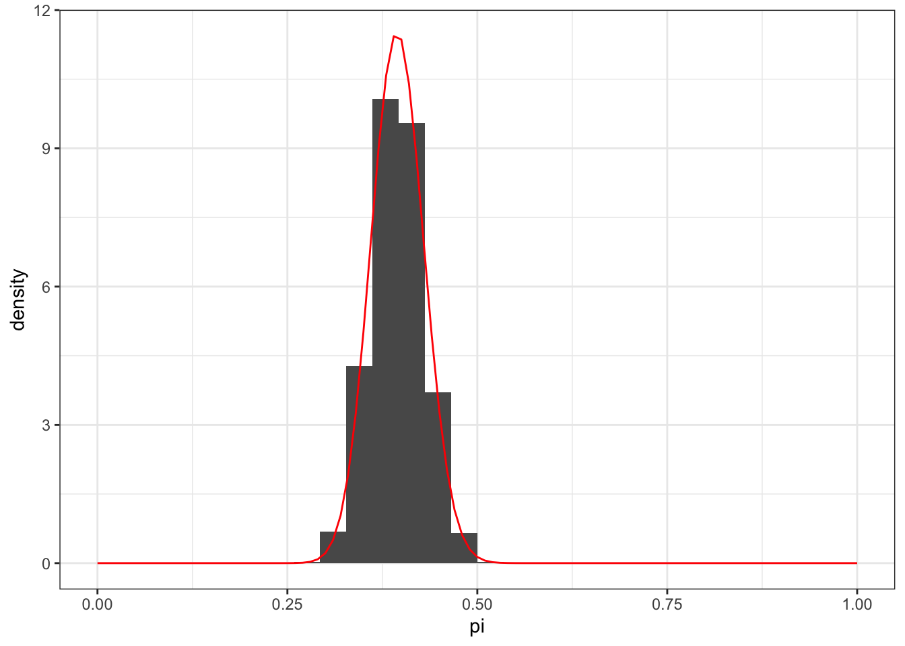
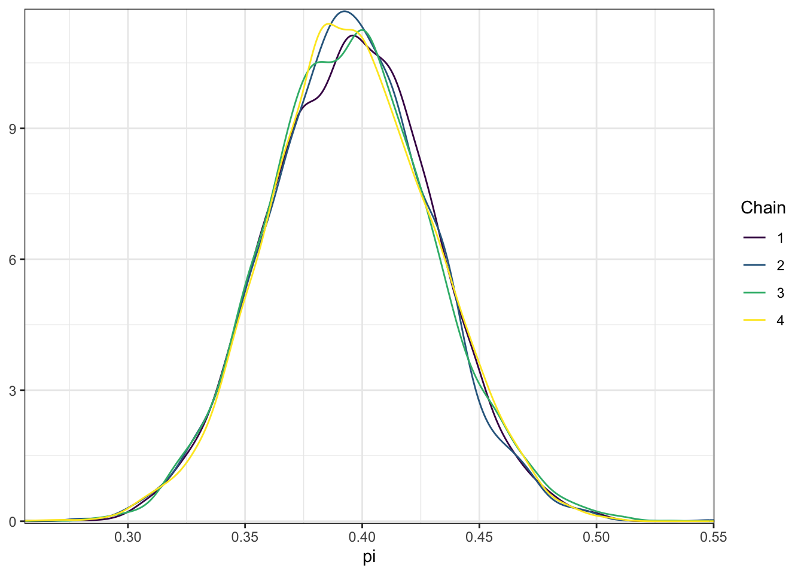
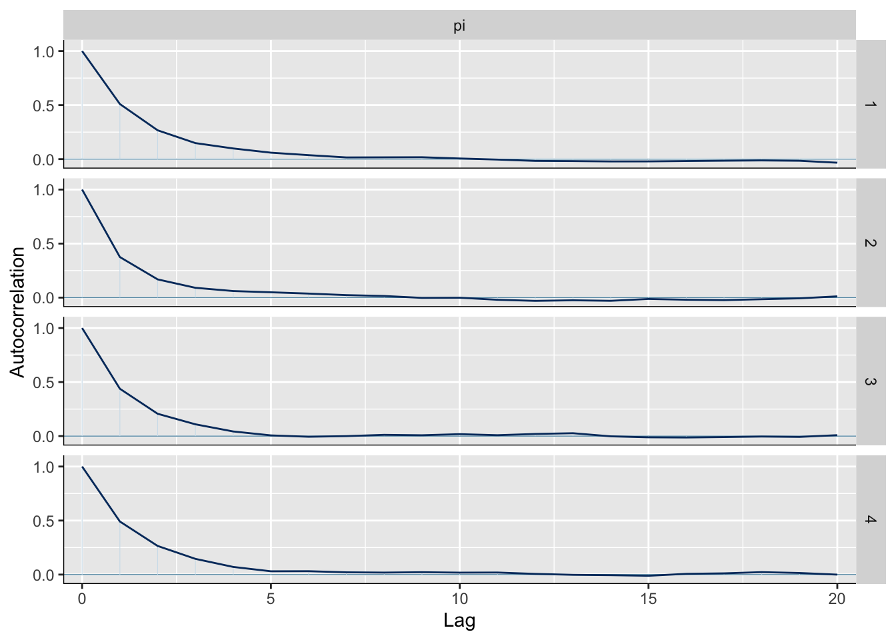

example(stan_model, package = "rstan", run.dontrun = TRUE)Lecture 15: Introduction to Stan
Introduction
The purpose of this demo is to demonstrate how to use the Stan probabilistic programming language in R with the rstan package.
Prior to proceeding through this demo, you need to install the rstan package. PAY ATTENTION! This package is not installed like normal R packages! You need to follow the instructions (depending on your OS) that are available here on GitHub. In order to make sure you have rstan installed correctly, you should be able to run the following line of code directly in your console to fit an example Stan model. It will load up fit, fit2, mod and stancode in your environment but you can remove them after making sure code runs without any errors (note the warning messages you see are fine and expected).
In this demo, we’ll once again consider the Beta-Binomial model for Caitlin Clark’s FG%. Similar to the posterior_approx.qmd demo, we do not need to read in any data for this demonstration.
Beta-Binomial in Stan
Assuming you have the rstan package installed, we can proceed to write-up our first Stan model. There are three main components to each Stan model:
data: you specify what type of data is used for the model, including info specifying if it’s an integer, real continuous number, are there bounds, etc. For our example, the onlydatawill be the number of successful FG attempts \(Y\) out of \(n = 85\) trials. This section will also include other relevant information about the data that we’ll see in the Bayesian RAPM Stan demo.parameters: what are the parameters of the model? In this example, we only have the \(\pi\) parameter for the Binomial distribution probability of success. You’ll also need to indicate the type and bounds for parameters.model: This the heart of the Stan code where you write out in code the model likelihood and prior (or more generally, the multilevel data generating process). As you’ll see, the functions for the different distributions effectively look like what you see on wikipedia pages for each distribution. You have the name of the distribution with the parameter inputs.
beta_binomial_model <- "
data {
// set-up the data as the number of success from 0 to 85
int<lower = 0, upper = 85> Y;
}
parameters {
// define the paramter pi
real<lower = 0, upper = 1> pi;
}
model {
// now write out the data-generating process, by sampling from
// the Binomial model with n = 85 and then specify the prior for pi
Y ~ binomial(85, pi);
pi ~ beta(45.9, 68.7);
}
"And now we’re ready to use rstan for approximating the posterior via simulation. We run the stan() function to do this where we provide it with the model_code, which can be stored in a string like above or as a .stan file. Additionally, we need to provide the input data as a list with names matching the specified data in the model code. The remaining input relates to the Markov chains:
chainstells Stan how many Markov chains to run in parallel, which is useful for speeding up the approximation. Additionally, this will be useful for diagnostics later on.itertells Stan how long each (i.e., how many iterations) each Markov chain should. However, you’ll notice in the code chunk below thatiter = 5000 * 2. This is because, by default via thewarmupargument, the first half of the iterations are warmup or burn-in samples that are ignored. The idea behind this is that the first so many steps in the chain might be unreasonable values for the parameter of interest, so we let it run for a bit before grabbing samples that are hopefully reasonable in approximating the posterior distribution.seedfor making sure we can replicate the randomness of the simulation results.
The following code chunk performs a simulation with 5000 iterations across 4 Markov chains, thus resulting in a sample of 20,000 values to approximate the posterior distribution (NOTE: this will take a few minutes to run since Stan effectively needs to compile code that is appropriate for the provided model and data):
library(rstan)Warning: package 'rstan' was built under R version 4.2.3Loading required package: StanHeadersWarning: package 'StanHeaders' was built under R version 4.2.3
rstan version 2.32.6 (Stan version 2.32.2)For execution on a local, multicore CPU with excess RAM we recommend calling
options(mc.cores = parallel::detectCores()).
To avoid recompilation of unchanged Stan programs, we recommend calling
rstan_options(auto_write = TRUE)
For within-chain threading using `reduce_sum()` or `map_rect()` Stan functions,
change `threads_per_chain` option:
rstan_options(threads_per_chain = 1)beta_binomial_sim <- stan(model_code = beta_binomial_model,
data = list(Y = 33),
chains = 4, iter = 5000 * 2,
seed = 2025)
SAMPLING FOR MODEL 'anon_model' NOW (CHAIN 1).
Chain 1:
Chain 1: Gradient evaluation took 3e-06 seconds
Chain 1: 1000 transitions using 10 leapfrog steps per transition would take 0.03 seconds.
Chain 1: Adjust your expectations accordingly!
Chain 1:
Chain 1:
Chain 1: Iteration: 1 / 10000 [ 0%] (Warmup)
Chain 1: Iteration: 1000 / 10000 [ 10%] (Warmup)
Chain 1: Iteration: 2000 / 10000 [ 20%] (Warmup)
Chain 1: Iteration: 3000 / 10000 [ 30%] (Warmup)
Chain 1: Iteration: 4000 / 10000 [ 40%] (Warmup)
Chain 1: Iteration: 5000 / 10000 [ 50%] (Warmup)
Chain 1: Iteration: 5001 / 10000 [ 50%] (Sampling)
Chain 1: Iteration: 6000 / 10000 [ 60%] (Sampling)
Chain 1: Iteration: 7000 / 10000 [ 70%] (Sampling)
Chain 1: Iteration: 8000 / 10000 [ 80%] (Sampling)
Chain 1: Iteration: 9000 / 10000 [ 90%] (Sampling)
Chain 1: Iteration: 10000 / 10000 [100%] (Sampling)
Chain 1:
Chain 1: Elapsed Time: 0.012 seconds (Warm-up)
Chain 1: 0.013 seconds (Sampling)
Chain 1: 0.025 seconds (Total)
Chain 1:
SAMPLING FOR MODEL 'anon_model' NOW (CHAIN 2).
Chain 2:
Chain 2: Gradient evaluation took 0 seconds
Chain 2: 1000 transitions using 10 leapfrog steps per transition would take 0 seconds.
Chain 2: Adjust your expectations accordingly!
Chain 2:
Chain 2:
Chain 2: Iteration: 1 / 10000 [ 0%] (Warmup)
Chain 2: Iteration: 1000 / 10000 [ 10%] (Warmup)
Chain 2: Iteration: 2000 / 10000 [ 20%] (Warmup)
Chain 2: Iteration: 3000 / 10000 [ 30%] (Warmup)
Chain 2: Iteration: 4000 / 10000 [ 40%] (Warmup)
Chain 2: Iteration: 5000 / 10000 [ 50%] (Warmup)
Chain 2: Iteration: 5001 / 10000 [ 50%] (Sampling)
Chain 2: Iteration: 6000 / 10000 [ 60%] (Sampling)
Chain 2: Iteration: 7000 / 10000 [ 70%] (Sampling)
Chain 2: Iteration: 8000 / 10000 [ 80%] (Sampling)
Chain 2: Iteration: 9000 / 10000 [ 90%] (Sampling)
Chain 2: Iteration: 10000 / 10000 [100%] (Sampling)
Chain 2:
Chain 2: Elapsed Time: 0.013 seconds (Warm-up)
Chain 2: 0.014 seconds (Sampling)
Chain 2: 0.027 seconds (Total)
Chain 2:
SAMPLING FOR MODEL 'anon_model' NOW (CHAIN 3).
Chain 3:
Chain 3: Gradient evaluation took 0 seconds
Chain 3: 1000 transitions using 10 leapfrog steps per transition would take 0 seconds.
Chain 3: Adjust your expectations accordingly!
Chain 3:
Chain 3:
Chain 3: Iteration: 1 / 10000 [ 0%] (Warmup)
Chain 3: Iteration: 1000 / 10000 [ 10%] (Warmup)
Chain 3: Iteration: 2000 / 10000 [ 20%] (Warmup)
Chain 3: Iteration: 3000 / 10000 [ 30%] (Warmup)
Chain 3: Iteration: 4000 / 10000 [ 40%] (Warmup)
Chain 3: Iteration: 5000 / 10000 [ 50%] (Warmup)
Chain 3: Iteration: 5001 / 10000 [ 50%] (Sampling)
Chain 3: Iteration: 6000 / 10000 [ 60%] (Sampling)
Chain 3: Iteration: 7000 / 10000 [ 70%] (Sampling)
Chain 3: Iteration: 8000 / 10000 [ 80%] (Sampling)
Chain 3: Iteration: 9000 / 10000 [ 90%] (Sampling)
Chain 3: Iteration: 10000 / 10000 [100%] (Sampling)
Chain 3:
Chain 3: Elapsed Time: 0.012 seconds (Warm-up)
Chain 3: 0.014 seconds (Sampling)
Chain 3: 0.026 seconds (Total)
Chain 3:
SAMPLING FOR MODEL 'anon_model' NOW (CHAIN 4).
Chain 4:
Chain 4: Gradient evaluation took 0 seconds
Chain 4: 1000 transitions using 10 leapfrog steps per transition would take 0 seconds.
Chain 4: Adjust your expectations accordingly!
Chain 4:
Chain 4:
Chain 4: Iteration: 1 / 10000 [ 0%] (Warmup)
Chain 4: Iteration: 1000 / 10000 [ 10%] (Warmup)
Chain 4: Iteration: 2000 / 10000 [ 20%] (Warmup)
Chain 4: Iteration: 3000 / 10000 [ 30%] (Warmup)
Chain 4: Iteration: 4000 / 10000 [ 40%] (Warmup)
Chain 4: Iteration: 5000 / 10000 [ 50%] (Warmup)
Chain 4: Iteration: 5001 / 10000 [ 50%] (Sampling)
Chain 4: Iteration: 6000 / 10000 [ 60%] (Sampling)
Chain 4: Iteration: 7000 / 10000 [ 70%] (Sampling)
Chain 4: Iteration: 8000 / 10000 [ 80%] (Sampling)
Chain 4: Iteration: 9000 / 10000 [ 90%] (Sampling)
Chain 4: Iteration: 10000 / 10000 [100%] (Sampling)
Chain 4:
Chain 4: Elapsed Time: 0.013 seconds (Warm-up)
Chain 4: 0.013 seconds (Sampling)
Chain 4: 0.026 seconds (Total)
Chain 4: The output you see is just an overview of the four parallel Markov chains, with an indication of how long it took for reach chain to run through all iterations. Notice that Stan displays which iterations are Warmup (the first half for each chain) versus those used for Sampling from the posterior.
Just for reference, the code chunk below shows how to use a .stan file instead of a string for the Stan model code. This file beta_binom.stan is available on Canvas in the demos/week9 folder. You will need to make sure the file path is correctly specified:
beta_binomial_sim <- stan(file = "beta_binom.stan",
data = list(Y = 33),
chains = 4, iter = 5000 * 2,
seed = 2024)In general, it is better practice write your Stan code in separate scripts since they can become quite complex (depending on your model).
Viewing the posterior simulations
Similar to the manual trace plot we created with the Metropolis-Hastings algorithm, we can create a trace plot for our Stan posterior samples. The easiest way to do this is with the bayesplot package created by the Stan team via the mcmc_trace() function which creates a trace plot with lines for each of the constructed Markov chains:
library(tidyverse)
library(bayesplot)
# Display the trace plot:
mcmc_trace(beta_binomial_sim,
# What are the parameters? Just pi here
pars = "pi",
# Modify the size of the lines
size = 0.5) +
# I changed the color scale and modified the theme:
scale_color_viridis_d() +
theme_bw()
We can also view the posterior distribution approximation (by combining the four chains post burn-in samples) via a couple different functions such as mcmc_hist():
mcmc_hist(beta_binomial_sim, pars = "pi") +
# Add y-axis back
yaxis_text(TRUE) +
ylab("count")`stat_bin()` using `bins = 30`. Pick better value with `binwidth`.
As well as mcmc_dens(), where the true posterior density is overlaid on top in red:
mcmc_dens(beta_binomial_sim, pars = "pi") +
yaxis_text(TRUE) +
stat_function(fun = dbeta, args = list(78.9, 120.7),
color = "red") +
ylab("density")
We can see that the posterior approximation is pretty close to the true posterior density, with just a slight difference in the center relative to the true red line. Otherwise, this is a pretty solid approximation that we should feel comfortable using.
We can easily create a tidy table of the posterior sample using the as.data.frame() function with the parameters we want as input in pars. In this case, we only want the pi parameter (and can ignore the log-posterior values that are reported) and then turn it into a tbl object for ease. By default, this concatenates the samples from the four different Markov chains resulting in a complete table of 20,000 rows:
posterior_sample <- as.data.frame(beta_binomial_sim, pars = "pi") |>
as_tibble()
posterior_sample# A tibble: 20,000 × 1
pi
<dbl>
1 0.408
2 0.340
3 0.367
4 0.419
5 0.392
6 0.323
7 0.355
8 0.412
9 0.379
10 0.383
# ℹ 19,990 more rowsUsing this sample, we can proceed as before in visualizing the distribution with our own code:
posterior_sample |>
ggplot(aes(x = pi)) +
geom_histogram(aes(y = after_stat(density))) +
stat_function(fun = dbeta, args = list(78.9, 120.7),
color = "red") +
scale_x_continuous(limits = c(0, 1)) +
theme_bw()`stat_bin()` using `bins = 30`. Pick better value with `binwidth`.Warning: Removed 2 rows containing missing values or values outside the scale range
(`geom_bar()`).
And also compute relevant quantities about the posterior distribution:
# Compute various summaries of posterior sample:
posterior_sample |>
summarize(posterior_mean = mean(pi),
posterior_median = median(pi),
# Convenient function for mode:
posterior_mode = bayesrules::sample_mode(pi),
# 95% credible interval:
lower_95 = quantile(pi, 0.025),
upper_95 = quantile(pi, 0.975))# A tibble: 1 × 5
posterior_mean posterior_median posterior_mode lower_95 upper_95
<dbl> <dbl> <dbl> <dbl> <dbl>
1 0.395 0.395 0.397 0.328 0.465(You can see that the above values are slightly different than the truth that was seen in posterior_approx.qmd.)
Diagnostics
Before you use the posterior samples for inference tasks, you should check diagnostics to assess the quality of your posterior simulation. There are a variety of different approaches to this, and we’ll cover just a small number of them in the rest of this demo.
The first thing to check is the trace plots of your Markov chains as visualized above. We want trace plots to look like random noise with no discernible patterns, such as the examples in this demo. We’ll discuss problematic traces in lecture.
Similar to displaying the trace plots with lines for each Markov chain, we can also compare the distributions for each Markov chain separately with overlaid densities as displayed below:
mcmc_dens_overlay(beta_binomial_sim, pars = "pi") +
scale_color_viridis_d() +
theme_bw()Scale for colour is already present.
Adding another scale for colour, which will replace the existing scale.
We want stability across the separate chains, with each distribution appearing similar to each other. We do not observe any problems in this case, with each Markov chain displaying distributions that clearly overlap with shared characteristics.
Additionally, we can also compute the \(\hat{R}\)-ratio to assess if the variability in the parameter values with all Markov chains combined is greater than the variability within each chain:
rhat(beta_binomial_sim, pars = "pi")[1] 1.000432We would be concerned if this value was noticeably larger than 1 (although 1.05 is considered the threshold for concern). The above value is close enough to 1 to indicate that the simulation is stable - with consistent posterior approximations across the four chains.
Despite the fact that Markov chain samples are inherently dependent on the previous value, we want them to behave like independent samples to have a better approximation of the posterior distribution. One way to assess this is with an autocorrelation plot, that observes the correlation between the Markov chain values at various sized lags. We can easily view the autocorrelations for each chain using mcmc_acf():
mcmc_acf(beta_binomial_sim, pars = "pi")
Here we see that the autocorrelation with lag-0 is 1, which is expected since that is just comparing a value with itself. Then with lag-1 the correlation drops to 0.5, and then shortly reaches 0 by just 5 steps in the chain across the four chains. This behavior is ideal, indicating that our samples are fast mixing: the samples are moving around the posterior distribution quickly.
In addition to the autocorrelation plots, we can compute the effective sample size ratio which is a ratio between the effective sample size of the chain divided by the actual sample size:
neff_ratio(beta_binomial_sim, pars = "pi")[1] 0.3364141We would be concerned by a really low value, such as 0.1 which is considered a problematic threshold. In this case, our value is not worrisome and we would be comfortable relying on our posterior samples for inference tasks.